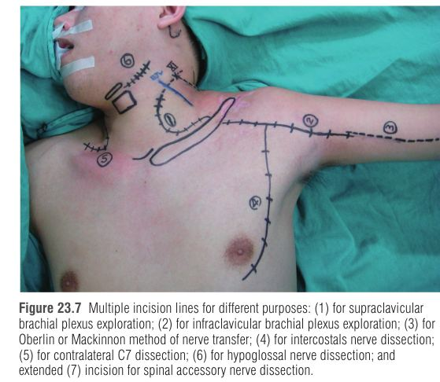

פרק 23: פגיעות בצמד הזרוע (בוגרים וילדים) Brachial Plexus Injuries: Adult and Pediatric
מתוך Plastic Surgery, Neligan – כרך 6: Hand and Upper Limb | מאת Johnny Chuieng-Yi Lu ו-David Chwei-Chin Chuang
צמד הזרוע (brachial plexus) הוא מערך העצבים המורכב ביותר בגוף ההיקפי, והוא יושב בין שני מבנים ניידים מאוד – הצוואר והזרוע. הפרק מחלק את הנושא לשתי ישויות שונות לחלוטין: פגיעה בבוגר (טראומה, בעיקר תאונת אופנוע) ושיתוק צמד זרוע מיילדותי (OBPP). אותה אנטומיה, אבל מנגנון, פרוגנוזה ואסטרטגיה ניתוחית שונים, ולכן חייבים לחשוב עליהן בנפרד.
הצמד נמתח בין עמוד השדרה הצווארי (קבוע יחסית) לבין הכתף והזרוע (נעות בטווח עצום). לכן כוח משיכה (traction) – למשל נפילה מאופנוע כשהראש נדחף לצד אחד והכתף נמשכת לצד השני – מותח את השורשים והגזעים עד קריעה או עקירה. זה מסביר למה רוב הפגיעות הן סגורות ומתיחתיות, ולא חדות.
מבנה
עובדה חשובה
שורש עצבי
נוצר מ-3-4 שורשיקים (rootlets) מהחוט; השורש הגבי (תחושתי, עם גנגליון DRG) והגחוני (מוטורי). כמה מ"מ בלבד אחרי הגנגליון הם מתאחדים לעצב שדרתי (spinal nerve) – ולכן המונח "postganglionic root" מבלבל.
גזע עליון
נותן את העצב העל-שכמתי (suprascapular n.) והעצב ל-subclavius – הענף הראשון מהצמד.
חבל צדדי / אחורי / מדיאלי
צדדי: סיבי C5-7 (lateral pectoral, musculocutaneous, חלק מהמדיאני); אחורי: radial + axillary; מדיאלי: ulnar + חלק מהמדיאני (צורת Y).
וריאציות
Prefixed (תרומת C4 גדולה, T1 קטנה) שכיח יותר מ-postfixed. לעיתים ה-MCN יוצא מהמדיאני.
מיקרו-אנטומיה
הטופוגרפיה הפנימית של הפסיקולים משתנה כל ~10 מ"מ, בעיקר בגזע העליון – ולכן תיקון ישיר או השתלות קצרות גורמים לצירוף תנועות לא רצוני (co-contraction) בגלל חיבור-מחדש שגוי (aberrant reinnervation).
2 רמות הפגיעה (Level I–IV) – המפתח לתכנון
סיווגים אנטומיים רבים בספרות מבלבלים, ולכן Chuang מציע סיווג במספרים. זו הטבלה החשובה ביותר בפרק:
מימין לשמאל: מהחוט ועד הענפים ההיקפיים (נתוני סדרת Chuang, 819 מקרים).
שני טיפוסי פגיעה מתיחתית:
Avulsion (עקירה)
Rupture (קריעה)
מה קורה
העצב נתלש ממקום החיבור (שורש מחוט השדרה; או דיסטלית משריר/עצם)
העצב נקרע באמצע; שני קצוות לא סדירים
ממצא ניתוחי
רק קצה אחד זמין; מבנה "קפיצי" בשלב חריף ו-neuroma פוסיפורמי בכרוני; בשורש – לעיתים pseudomeningocele
שני הקצוות נראים באותו שדה; neuroma גדול בכרוני
אפשרות תיקון
הקצה הפרוקסימלי חסר – לא ניתן לתיקון ישיר
ניתן nerve graft אם יש קצה פרוקסימלי תקין
שורשים נוטים לעקירה כי התמיכה שלהם חלשה (דורה ודנטט ליגמנטס). בבוגר Level I הוא השכיח ביותר; העצבים העליונים (C5-6) נוטים להיקרע, והתחתונים (C8-T1) נוטים להיעקר.
מנגנון avulsion (A,B) מול rupture (C) — Neligan 5th ed., Fig. 23.3
3 בדיקה קלינית ואבחנה – הכלי החשוב ביותר
הפרק מדגיש: הבדיקה הקלינית היא השלב החשוב ביותר בקביעת האבחנה, הרמה והפרוגנוזה. ממלאים "צ'ארט צמד זרוע" לפני ניתוח (בדרך כלל כ-2 חודשים לאחר הפגיעה), מדרגים שרירים בסולם MRC ומשווים בביקורים הבאים.
ממצא
מה אומר
למה (מנגנון)
שיתוק סרעפת
פגיעה ב-C4 ו-C5 פרוקסימלי מאוד (Level I)
העצב הפרני מקורו ב-C3-5
Levator scapulae / rhomboid פעילים
C5 קרוע (Level II) עם קצה פרוקסימלי זמין
העצב הדורסלי של השכמה יוצא מהשורש עצמו, לפני היווצרות הצמד
Serratus anterior פעיל
לפחות C5 נקרע אחרי יציאת העצב הארוך של בית החזה (C5 זמין להעברה)
העצב הארוך של בית החזה נוצר מהשורשים עצמם
Pectoralis major clavicular חלש
לפחות Level III ומעלה
מקבל מהגזע העליון/האמצעי (lateral pectoral n.)
Horner (miosis, ptosis, enophthalmos, anhidrosis)
עקירת C8-T1 (Level I)
סיבים סימפתטיים מ-T1-2 עוברים צמוד לשורשי T1/C8
Tinel (צוואר, Erb's point, קורקואיד)
מעקב אחר התחדשות; אם נשאר באותה נקודה – ניתוח
אקסונים מתחדשים רגישים למגע מכני
דופק רדיאלי חלש
פגיעה בעורק התת-בריחי (Level I) או בעורק בית השחי (Level IV)
כלי הדם צמודים לצמד
Causalgia חמורה
עקירת שורשים תחתונים – פרוגנוזה גרועה
השורשים התחתונים עשירים בסיבים סימפתטיים
דירוג MRC (שינוי Chuang): M0 אין התכווצות; M1 הבהוב; M2 תנועה ללא כוח משיכה; M3 נגד כוח משיכה; M4 נגד כוח משיכה והתנגדות (בשינוי: התנגדות אצבע אחת ≥30 שנ'); M5 כוח תקין (התנגדות 4 אצבעות). תחושה: S0–S4, עם S2+ (כאב ומגע עם תגובת-יתר).
הדמיה ובדיקות חשמל
MRI הוא כלי ההדמיה המועדף: פרוטוקול FIESTA 3D עם רקונסטרוקציה curved-planar מציג את השורשיקים; pseudomeningocele ושורשים חסרים מצביעים על עקירה; שרירי paraspinal אחוריים חריגים הם סימן עקיף. DWI מסייע להדמיית Level II. CT myelography הוחלף במידה רבה ב-MRI.
צילום חזה בשאיפה ונשיפה (שיתוק סרעפת) וצילום צוואר (שברי תהליכים).
EMG/NCS: מבדילים בין חסימה דמיאלינית לבין אובדן אקסונים. EMG בשלב החריף (לפני כ-3 שבועות) חסר ערך כי עדיין אין fibrillation.
הטריק המבחנתי: SNAP תקין + שיתוק מלא של הגפה = נזק פרה-גנגליוני (עקירת שורש, Level I). למה? גוף התא התחושתי (ה-DRG) יושב מחוץ לתעלה ונשאר מחובר לאקסון ההיקפי – האקסון ההיקפי חי ומוליך (SNAP תקין) למרות שהחיבור לחוט נותק. בנזק פוסט-גנגליוני גם ה-SNAP נעלם. CMAP נעדר + SNAP תקין = עקירת שורש.
הבדלה בין supra- ל-infraclavicular
סימן
Supraclavicular (I–III)
Infraclavicular (IV)
Supraspinatus M0 + serratus M0
אפשרי
בלתי אפשרי
Supraspinatus >M3 + serratus >M3
בלתי אפשרי
אפשרי
פגיעה מבודדת ב-axillary או musculocutaneous
בלתי אפשרי
אפשרי
שבר בשכמה / פריקת כתף
–
סימן ל-Level IV
MRI
חשוב ל-Level I
לא חשוב
4 עיתוי ניתוח
חמש נקודות זמן אפשריות: מיידי (ימים-שבועות), מוקדם (חודש), מוקדם-מאוחר (3-5 חודשים) – הנפוץ והמועדף כיום, מאוחר (>6 חודשים), כרוני (>שנה). בפגיעה חודרת חדה מבצעים חקירה וטיפול מיידי. בפגיעה סגורה ממתינים כי קשה להעריך את מידת הנזק. העברות עצב מומלצות בתוך כ-5 חודשים מהפגיעה ("חלון הזהב") כדי להחיות את השרירים לפני שהם עוברים שינויים בלתי הפיכים.
5 טיפול ניתוחי – העברות עצב
העברת עצב (nerve transfer) = חיתוך מכוון של עצב תורם בריא (עם תחלואה נמוכה) וחיבורו לעצב משותק דיסטלי חשוב יותר. מטרה: M4.
Proximal nerve transfer
Distal nerve transfer
פילוסופיה
מסורתית, פיזיולוגית
אסטרטגיה חדשה
יתרונות
אבחנתי וטיפולי; כוח גדול; גדם עצב לעיתים לא בריא; פחות חסרים תפקודיים
תיקון ישיר ללא nerve graft; פחות צלקות; ניתוח קצר; גדם בריא; החלמה מהירה
חסרונות
צלקות, דיסקציה קשה, תמיד השתלות עצב (לעיתים >8 ס"מ), שיקום ארוך
חיתוך עצב שעלול לגרום חסר; סיכון איאטרוגני; לעיתים חתכים מרובים
התוויה
כל סוגי העקירה/קריעה
לא ב-global BPI; מתאים ל-intrinsic palsy
במחקר של 188 חולים, שיעור ההצלחה של כיפוף מרפק (≥M3) היה דומה בין proximal ל-distal (P=0.424); מהירות ההחלמה לא נבדלה מובהקות (19 מול 23.9 חודשים). שלוש העברות עצב לכתף הביאו ל-160° הרמת כתף בממוצע, מול 85° עם שתיים ו-65° עם אחת.
תוצאה אחרי ניתוח חד-שלבי: C5 קרע + עקירת C6–T1 (העברות עצב) — Neligan 5th ed., Fig. 23.12
העברות שריר ו-FFMT
Pedicled muscle transfer (למשל latissimus dorsi למרפק או pectoralis): מתאים רק ל-non-global BPI (למשל C5-6 עם C7-T1 תקינים). השריר המועבר חייב להיות ≥M4 לפני העברה. דוגמה: latissimus לאחר פגיעת צמד נותן בדרך כלל רק M3, כי עצב ה-thoracodorsal (C6-8) עצמו פגוע; לעומת זאת בפציעה טראומטית של biceps נותן M4.
FFMT (functioning free muscle transplantation): העברת שריר עם אנסטומוזת כלי דם ותפר עצבי לעצב מוטורי מקבל. Gracilis הוא התורם הנפוץ ביותר. תורמי עצב: XI, intercostals, Ph, CC7, חלק מ-ulnar/median. התוויות: עקירת שורשים חריפה/כרונית, כשלון העברת עצב (פחות מ-M3), או BPI עם Volkmann. החסרון: אין תחושה ביד.
Level II, III, IV – בקצרה
Level II (8%): neurolysis, nerve repair/graft; הצלקת סביב ה-scalene האמצעי היא הממצא העיקרי. ההבדלה בין שורש (I) לעצב שדרתי (II) משנה את הגישה והפרוגנוזה.
Level III (5%): neuroma וצלקות קשות; נדרש bypass graft בין supra- ל-infraclavicular, לעיתים clavicular osteotomy; לעיתים C-loop vascularized ulnar nerve graft כדי לצמצם את מספר ההשתלות.
Level IV (17%): לרוב מבודד; פגיעה בכלי דם (תת-בריחי/בית השחי) כ-30%. בפגיעה חודרת מתקנים עצב וכלי דם יחד; "חלון הזהב" לתיקון ראשוני ללא graft הוא תוך 2 שבועות. פגיעת מתיחה לעיתים קשורה לשבר בהומרוס הפרוקסימלי או בגלנואיד. נדרשים לעיתים graft ארוך (>8 ס"מ).
נקודות ציון בחשיפה

קווי חתך לחשיפות שונות של המקלעת והעברות עצב — Neligan 5th ed., Fig. 23.7
Landmarks – בקצרה
• Supraclavicular: חתך C לאורך שולי SCM; לא עוברים את הווריד הצווארי הפנימי (גבול מדיאלי); העצבים התחושתיים העל-בריחיים הם הגבול העליון. Omohyoid – נקודת ציון ושימור. יש לקשור תעלות לימפה לפני חיתוך (למנוע דליפה לימפטית).
• זיהוי C5 מול C6: ל-C5 tubercle קדמי דומיננטי; העצב שיוצא מעל ה-tubercle הוא C5, מתחתיו – C6.
• העצב מתחת ל-transverse cervical artery הוא בדרך כלל C5/גזע עליון; מתחת לעורק התת-בריחי – C8 / גזע תחתון.
• Infraclavicular: חתך deltopectoral; Chuang's triangle ו"הקו הלבן" (white line) בין החלק הקלביקולרי לסטרנלי של pectoralis major; החבל הראשון מתחת ל-pectoralis minor הוא ה-lateral.
6 שיקום ותוצאות
קיבוע (splint) 3 שבועות אחרי graft/העברת עצב; לאחר מכן פיזיותרפיה, גירוי חשמלי ביתי פעמיים ביום, ביופידבק.
Induction exercise (תרגול זימון): חיוני לאחר כל העברת עצב ו-FFMT – המטופל מפעיל את הפונקציה המקורית של העצב התורם כדי להניע את השריר המקבל. לדוגמה אחרי העברת intercostal – נשימה עמוקה מגבירה כיווץ ה-biceps. זה מנצל פלסטיות קורטיקלית. מתחילים כשתנועה (M1) מוחשת בשריר.
אחרי העברת intercostal: הרמת כתף פסיבית מוגבלת ל-<90° ל-6 חודשים. מעקב: לפחות 2 שנים בפלקסוס עליון, 4 שנים בתחתון.
Intrinsic palsy: אורתוזה קבועה להארכת ה-IP.
קטיעה – אופציה אחרונה אם השחזור נכשל והגפה נתפסת כמשקל מת. "למי שאין כלום – קצת זה הרבה".
הרבה (70–92% בספרות; לפי המחבר שיעור החלמה ספונטנית נמוך, 7–50%)
רמות פגיעה
I–IV
כמעט תמיד I–III (supraclavicular), IV נדיר
פער עצבי
תמיד >5 ס"מ בקריעה
קצר 2-4 ס"מ → aberrant reinnervation שכיח
עדיפות שחזור
מרפק ← כתף ← יד
יד ← כתף ← מרפק
תורמים
העברות עצב רבות
graft יותר מהעברה; Ph נדיר (סיכון נשימתי)
כאב
בעיה גדולה
כמעט אין
סיווג קליני של OBPP – 5 סוגים
סוג
שם
תמונה קלינית
1
Erb (upper, C5-6)
כתף בהאדקציה וסיבוב פנימי, מרפק מיושר, אמה בפרונציה
2
Extended Erb (C5-7)
כנ"ל + שורש כף יד כפוף (waiter's tip)
3
Global ללא Horner
זרוע רפויה (flail)
4
Global עם Horner
flail + Horner
5
Klumpke (lower)
יד משותקת בלבד; כ-1%
בחולים שלא נותחו שכיחים סוגים 1-2; בחולים שנותחו – 3-4. שבר בבריח אפסילטרלי – סימן פרוגנוסטי טוב; שבר בבריח קונטרלטרלי – סימן רע (אנרגיה גבוהה). בדיקה: tickling test ו-towel test; מספיק דירוג M2 כדי לחזות תוצאה טובה (אין צורך ב-M4).
עיתוי ניתוח ב-I-OBPP
Gilbert: אין כיפוף מרפק ב-3 חודשים → ניתוח. Clarke & Curtis: "cookie test" – אם הילד לא מצליח להביא עוגייה לפה ב-9 חודשים.
המלצת המחבר: בין השניים. יד משותקת = דחיפות. שיתוק גלובלי ללא כיפוף מרפק ויד – חקירה תוך 3 חודשים. אם יש כיפוף שורש/אצבעות – עוד 3 חודשים מעקב. אם אין שיפור בכיפוף מרפק ב-6 חודשים → ניתוח.
אם כתף או מרפק גרועים בגיל שנה – ניתוח עדיין מוצדק; חוסר פונקציית יד בגיל זה אינו התוויה כי כבר מאוחר.
ניתוח ושיקום ב-I-OBPP
הפלטיזמה דקה מאוד – החתך ישירות על ה-SCM; העצב הפרני חייב להישמר (משיכה מוגזמת גורמת לשיתוק סרעפת). חושפים את כל C5-T1; scalenus anterior נחתך חלקית. Nerve grafts מ-sural ו-saphenous.
ממצאי חקירה (סדרה של 119): קריעה בלבד 40%; קריעה + עקירה 60% (שורש אחד 18, שניים 28, שלושה 17, ארבעה 9). C5-6 לרוב נקרעים; C8-T1 לרוב נעקרים.
קריעה בלבד: C5 ng → SS + PD (כתף), C6 ng → AD (מרפק), C7 → C7 דיסטלי; graft 4-6 ס"מ.
קריעה + עקירה: עדיפות ליד, אחר כך מרפק, אחר כך כתף; XI → SS לכתף; T3–5 intercostals → MCN למרפק; C5/C6 → median/C8 ליד. Intercostal בילדים הרבה יותר יעיל מאשר בבוגרים.
לאחר הניתוח: סד צוואר קשיח 4 שבועות (לא 3 כבוגר); ניתוח כ-8 שעות; ICU 3-5 ימים; אשפוז כשבוע; שני קווי ורידים מרכזיים בוריד femoral.
תוצאות C5→SS + PD ו-C6→AD: הרמת כתף ממוצעת 132°, סיבוב חיצוני 67°, מרפק לרוב M3.
טוב
בינוני
גרוע
Shoulder abduction
>120°
90–120°
<90°
External rotation
>90°
60–90°
<60°
יד לפה / פשיטת מרפק / כיפוף אצבעות
קל (M=3)
קשה (M=2)
בלתי אפשרי (M<2)
8 S-OBPP – נכות שארית (Sequelae)
למה נוצרות עיוותים? חיבור-מחדש שגוי (aberrant reinnervation, שכיח בכתף ובמרפק, נדיר ביד) ← צירוף תנועות (co-contraction) של אגוניסט ואנטגוניסט ← חוסר איזון שרירי ← התכווצויות (teres major, pectoralis, brachialis, biceps) ← עיוות גדילה של העצם והמפרק.
סוג co-contraction
תוצאה
Shoulder abductors + adductors
הגבלת הרמת כתף; התכווצות adduction / סיבוב פנימי
Elbow flexors + extensors
קושי ב"יד לפה"; בהמשך התכווצות כיפוף מרפק
Elbow flexors + shoulder abductors
Trumpet sign – כשמנסה להביא יד לפה הכתף עולה בכוח כמו נפיחה בחצוצרה. זווית >80° = חמור; 40–80° בינוני; <40° קל
כתף: שחרור אנטגוניסטים (pectoralis major, teres major), חיזוק שרירים פרטיים (teres major ל-infraspinatus; latissimus ל-teres minor/humerus לסיבוב חיצוני). הגיל האידיאלי 4–10. הרמה ממוצעת 151° (רווח 77°). אוסטאוטומיה מתקנת מראה ולא תפקוד.
מרפק: המחבר הפסיק triceps-to-biceps כי מאבדים פשיטה. במצב של aberrant reinnervation מתקנים קודם פשיטה: biceps-to-triceps. השלמה: FFMT או Steindler flexoplasty.
אמה ויד: הגיל האופטימלי מאוחר (6–13); העברות כופף-לפושט (FCR+PL → EDC), rerouting biceps לסופינציה (Zancolli); FFMT עם intercostal ל-FDP. הפרעת תחושה – בעיה שולית.
עתיד: ב-type 3/4 – יד כעדיפות ראשונה; סיווג I-OBPP מאוחד; ניתוח אנדוסקופי/רובוטי.
9 טכניקות זכירה
המבנה: R-T-D-C-B
Roots → Trunks → Divisions → Cords → Branches – המשפט הקלאסי: "Randy Travis Drinks Cold Beer".
רמות הפגיעה: I = בתוך העצם (עמוד שדרה), II = בתוך שריר (scalene), III = לפני/אחרי הבריח, IV = מתחת לבריח. "1-2-3-4: עצם, שריר, בריח, מתחת".
דמייני רכבת בת חמש קרונות שנוסעת מהצוואר אל היד (השורשים). אם המסילה נקרעת בתוך המנהרה (העצם – Level I), אין שום חיבור למנוע המרכזי – אי אפשר להדביק, רק להחליף קטר: מושכים קטר חדש מרכבת שכנה (העברת עצב). אם הקרע מחוץ למנהרה ויש עדיין קרון סמוך שממשיך לנוע, אפשר לבנות גשר חדש (graft). הרכבת של התינוק (OBPP) היא רכבת צעצוע: המסילות קצרות, ולכן אם מחברים לא נכון – שני קרונות מתנגשים (co-contraction).
רוכב אופנוע בן 24 הובא לאחר תאונה עם משיכה חדה של הכתף הימנית. אינו מסוגל להרים את הכתף או לכופף את המרפק. בבדיקה: הרמת כתף M0, כיפוף מרפק M0, תחושה נעדרת ביד, אצבעות משותקות. ptosis ו-miosis ימניים. דופק רדיאלי חלש. כאב חשמלי חמור. EMG אחרי 6 שבועות: SNAP תקין, CMAP נעדר. MRI עם FIESTA: pseudomeningocele ב-C5–T1. הרופא המטפל שוקל תכנית ניתוחית.
1. מהי רמת הפגיעה העיקרית והמנגנון המסביר SNAP תקין עם שיתוק מלא בוינייטה?
נכון: Level I (~70% מהפגיעות) – עקירה פרה-גנגליונית. גוף התא התחושתי יושב ב-DRG מחוץ לתעלה, ולכן האקסון ההיקפי נשאר חי ומוליך. Horner (T1), pseudomeningocele ב-MRI ודופק חלש אופייניים לשורשים תחתונים. תשובות 1,2,4: בנזק פוסט-גנגליוני (II-IV) גם ה-SNAP נעלם.
2. מהי עדיפות השחזור בבוגר עם total root avulsion בגישת "multiple nerve transfers first"?
נכון: בבוגר הגישה פרוקסימלית-לדיסטלית (Chuang). תשובה 1 היא העדיפות ב-OBPP; ב-FFMT-first של Doi הכיוון דיסטלי לפרוקסימלי. תשובה 3 שגויה – תחושת יד וכיפוף אצבעות חיוניים.
3. תינוק בן 3 חודשים עם שיתוק גלובלי (type 3), ללא כיפוף מרפק וללא תפקוד יד. מה ההמלצה?
נכון: שיתוק גלובלי ללא כיפוף מרפק ויד = התוויה לחקירה מוקדמת. "Cookie test" (9 חודשים) מזלזל במצב היד; תשובה 2 מתבססת על נתוני החלמה ספונטנית שהמחבר מפקפק בהם. העברת Ph נדירה ב-OBPP בגלל סיכון נשימתי.
4. ילד בן 7 עם S-OBPP: כשהוא מנסה להביא יד לפה, הכתף מתרוממת בכוח והזווית בין הזרוע לגוף מעל 80°. מהו הממצא והמנגנון?
נכון: Trumpet sign. זווית >80° = חמור. מנגנון: חיבור-מחדש שגוי של אקסונים. התשובות האחרות אינן קשורות לצירוף תנועות.
5. מהו היתרון המרכזי של distal (closed-target) nerve transfer לעומת proximal?
נכון: תיקון קרוב ליעד, בלי graft. תשובה 1 – יתרון של proximal. תשובה 3 – distal לא מתאים ל-global BPI. תשובה 4 – יש סיכון לחסר (לעיתים חולשת אחיזה).
6. מתי נחוצה "induction exercise" ולמה?
נכון: דוגמה – אחרי העברת intercostal נושמים עמוק כדי להפעיל את ה-biceps. מתחילים כשתנועה (M1) מוחשת בשריר. תשובות 1 ו-4 מגבילות באופן שגוי.
12 סיכום של הסיכום
BPI בבוגר = לרוב מתיחה סגורה (אופנוע). Level I–IV: I=שורש (~70%, עקירה, לא ניתן לתיקון), II=scalene (8%), III=גזעים (5%), IV=חבלים (17%).
Avulsion = קצה פרוקסימלי חסר; rupture = ניתן graft. SNAP תקין + שיתוק = Level I. Horner = C8-T1.
MRI (FIESTA 3D) הוא ההדמיה המועדפת; EMG רק אחרי ~3 שבועות. עיתוי: 3-5 חודשים; העברות עצב בתוך ~5 חודשים.
העברת עצב: extraplexus (Ph, XI, XII, CMB, CC7), intraplexus, distal (Oberlin/Mackinnon), end-to-side. שלוש העברות לכתף = ~160°.
Total avulsion: multiple NT (Chuang, פרוקסימלי→דיסטלי) מול FFMT first (Doi, דיסטלי→פרוקסימלי); gracilis התורם הנפוץ; induction exercise חיוני.
OBPP: סוגים 1-5 (Erb, extended, global ללא/עם Horner, Klumpke); ניתוח מוקדם (3 חודשים) כשיד משותקת; עדיפות יד → כתף → מרפק; סד צוואר 4 שבועות.
S-OBPP: aberrant reinnervation → co-contraction (trumpet sign) → התכווצויות; שחרור אנטגוניסטים + העברות שריר; במקום triceps-to-biceps – biceps-to-triceps/FFMT/Steindler.